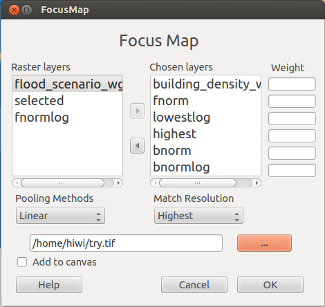

This document gives you a brief introduction of plugin Normalization. Here is the Normalization interface:
Raster Layer combobox provides all the raster layers from QGis layers, from where users can choose anyone need to be normalised.
Chosen Layer combobox shows all the layers that users chose from Raster Layers for focus map. At most 6 layers can be chosen.
Users can set weights for different layers for focus calculation.
Users can choose different pooling methods for focus calculation, here two methods are provided: Linear and LogLinear.
If images have different resolutions, resampling is necessary. Users can choose the highest or lowest resolution as target, also can choose any layer from chosen layers and use its resolution as target resolution.
Users choose the image storage path and give the new normalized image a name.
When add to canvas is checked, the mormalized image will be automatically added to QGis layers.
Show users the help document on click.
For more information, please check the SENSUM PROJECT !